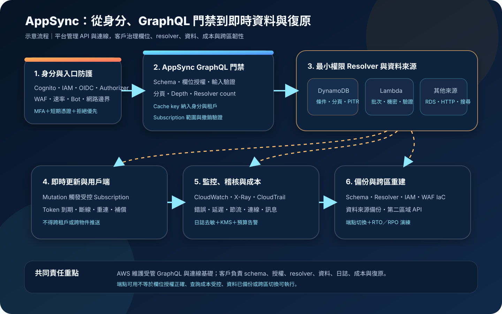

AWS AppSync：受管 GraphQL API、即時資料與授權治理
AWS AppSync 以受管 GraphQL 端點整合多種資料來源，並提供即時更新、快取、授權與觀測能力。它能減少 API 基礎設施工作，但 schema 邊界、resolver 權限、欄位授權、查詢成本、資料保護與復原驗證仍由客戶治理。
作者：Dr. William｜查閱與發布：2026-10-16
服務定位
AWS AppSync 是受管 GraphQL API 服務。團隊以 schema 定義資料型別與可執行操作，再以 resolver 將欄位連接到 DynamoDB、Lambda、OpenSearch Service、Amazon RDS、HTTP 端點或其他支援的資料來源。用戶端可在單次請求選取需要的欄位，也可透過 subscriptions 接收即時更新。
AppSync 管理 GraphQL 端點、請求路由、WebSocket 連線、部分快取與服務層擴展。它不會替代資料模型、業務授權、輸入驗證、下游容量管理、資料備份或災難復原。GraphQL 的彈性若沒有欄位級授權、查詢限制與 resolver 最小權限，會放大資料越權與成本失控風險。
核心概念與服務邊界
GraphQL 執行模型
- Schema：以 type、query、mutation 與 subscription 定義公開契約；變更應版本化、審查並測試相容性。
- Resolver：把欄位轉換為資料來源操作；可使用 JavaScript runtime 或 VTL，並可組成 pipeline resolver。
- Data source：承接實際資料讀寫；AppSync service role 只應具備 resolver 所需的最小動作與資源範圍。
- Selection set：用戶端指定回傳欄位；便利性不代表可跳過每個欄位與物件的授權判斷。
- Subscription：可由 mutation 觸發即時推送；連線身分、訂閱條件、過濾與撤銷都需驗證。
- Cache：可降低延遲與下游負載；cache key 若缺少身分或租戶維度，可能把資料回給錯誤使用者。
存取與網路模型
- 授權模式：可使用 API key、AWS IAM、Amazon Cognito user pools、OpenID Connect 或 AWS Lambda authorizer，並可設定額外模式。
- 欄位授權：不同 type 或 field 可套用不同授權模式；預設模式不等於所有欄位都適合相同信任層級。
- 公開 API：由網際網路可達，仍須執行身分驗證、授權、節流、查詢限制、WAF 與濫用監控。
- Private API：可透過 interface VPC endpoint 存取；建立時即決定是否為 private，不能事後直接切換。
- 觀測：可整合 CloudWatch metrics、logs、enhanced metrics、X-Ray 與 CloudTrail；詳細日誌必須避免敏感資料。
- 加密：傳輸使用 TLS；下游資料、日誌、備份與機密仍應依各服務能力使用 KMS 與適當金鑰政策。
適合與不適合的使用情境
適合
- Web、行動或多通路前端需要以同一 schema 聚合多個 AWS 資料來源，並減少過度或不足取數。
- 儀表板、協作工具、狀態通知或聊天等情境需要受管 WebSocket 連線與即時資料推送。
- 團隊能以明確 schema、resolver 測試、欄位授權與基礎設施即程式碼管理 API 生命週期。
- 需要結合 Cognito、IAM、OIDC 或 Lambda authorizer，對不同欄位、租戶與操作建立細緻存取控制。
- 希望以快取、批次處理與 resolver 設計減少後端往返，同時建立可觀測與成本門檻。
不適合或不能單獨完成
- API 契約高度依賴原始 HTTP 狀態碼、串流下載、任意二進位回應或非 GraphQL 協定，且無法接受轉接層。
- 只需要少量固定 REST 路由，團隊沒有 GraphQL schema、resolver、查詢成本與用戶端快取治理能力。
- 希望服務自動推導業務授權、資料列級隔離、租戶邊界或個資遮罩，而未在 resolver 與資料層明確實作。
- 下游系統沒有容量保護，卻允許任意深度、高 fan-out、昂貴搜尋或大量即時訂閱。
- 把 private API 誤當成完整授權機制；網路私有化不能取代身分、物件與欄位授權。
示意故事案例：多租戶維運看板與即時工單
以下為示意案例，不代表特定企業或正式部署。 一家設備維運平台提供多租戶看板。使用者透過 Cognito user pool 登入，token 只攜帶必要的租戶與角色識別。GraphQL schema 將公開摘要、租戶設備、工單細節與管理操作拆成不同欄位；resolver 每次都從已驗證身分取得租戶識別，不接受前端自行宣告的租戶值作為授權依據。
AppSync 將設備摘要查詢送到 DynamoDB，把複雜報表交由具專用角色的 Lambda 處理，工單 mutation 寫入資料庫後觸發限定租戶與設備範圍的 subscription。AppSync service role 只能存取指定資料表、索引與函式；管理者使用聯合登入、MFA 與短期憑證部署 schema，不建立長期存取金鑰。
公開端點關聯 AWS WAF，設定速率、已知惡意輸入與 Bot 控制；resolver 實作分頁、最大筆數、批次讀取與可接受的查詢成本。欄位日誌只在受控除錯期間開啟，並排除個資、驗證資料與完整 payload。CloudWatch 監控錯誤、延遲、節流、resolver 與訂閱連線，CloudTrail 稽核控制面變更。團隊以 IaC 保存 schema、resolver、角色與資料來源，在第二區域部署待命 API，並依下游資料的備份與複寫能力演練 DNS 切換。

建置與運作流程
- 定義契約：盤點使用者、租戶、資料分類、查詢、mutation、subscription、延遲、RTO、RPO、合規與預算。
- 設計 schema：以最小必要欄位建立 type，區分公開、租戶、管理與敏感資料，不把內部資料模型原樣暴露。
- 選擇授權：依使用者與工作負載選擇 Cognito、IAM、OIDC 或 Lambda authorizer；API key 只用於可接受的低信任公開情境。
- 建立欄位邊界：在 type 與 field 明確配置授權模式，將物件、租戶與角色驗證放入可測試的 resolver 或資料層。
- 設計資料來源：確認 DynamoDB、Lambda、RDS、OpenSearch 或 HTTP 端點的容量、網路、交易、錯誤與重試邊界。
- 最小化 IAM：為 AppSync data source 建立專用 service role；管理者使用聯合登入、MFA 與短期憑證。
- 管理機密：不在 schema、resolver、環境設定或日誌寫入憑證；需要機密時由受控 Lambda 使用 Secrets Manager 或 Parameter Store 取得。
- 限制查詢成本：使用分頁、最大頁數、批次、快取、resolver timeout 與合理的 query depth／resolver count 限制。
- 保護入口：公開 API 評估 AWS WAF、速率限制與濫用防護；內部 API 評估 private API 與 VPC endpoint policy。
- 保護快取：只快取可安全重用的結果，cache key 納入身分、租戶與授權差異；敏感資料設定短 TTL 或不快取。
- 治理即時連線：限制可訂閱事件與過濾條件，測試 token 到期、權限撤銷、斷線重連、離線補償與大量連線。
- 建立觀測：設定 CloudWatch metrics、enhanced metrics、錯誤率、延遲、節流、resolver、subscription 與下游容量告警。
- 控制日誌：選擇必要的 field log level，關閉敏感 header／payload，設定 KMS、保留期、最小查閱與集中稽核。
- 版本化部署：以 IaC 保存 API、schema、resolver、data source、角色、WAF 與告警，執行 schema diff、授權及負載測試。
- 演練復原：備份與還原下游資料，於第二區域重建 API，驗證用戶端端點切換、subscription 重連與資料一致性。
成本、可用性與維運考量
AppSync GraphQL API 的主要計費維度包括 query／data modification operations、real-time updates、connection minutes，以及選用的快取資源；資料傳輸、CloudWatch logs、X-Ray、WAF、Lambda 與各資料來源另行計費。一次 GraphQL 請求可能執行多個 resolver，實際成本不能只用 HTTP 請求數估算，應同時觀察 resolver 數量、回傳資料量、即時訊息、連線時間、日誌與下游讀寫。
GraphQL 的 selection set 能減少不必要回傳，但深層查詢、巢狀關聯、逐筆 resolver 與未批次化存取可能形成 N+1 放大。應使用分頁、批次、快取、查詢限制、預算與異常流量告警，並測試尖峰下的 DynamoDB、Lambda、RDS 或 OpenSearch 容量。
AppSync 是區域服務。受管端點與多可用區基礎能降低單一基礎設施故障，但不代表 schema、resolver、身分供應者、資料來源與狀態已跨區。跨區方案需重建 API、同步必要組態、準備資料層復原、設計 DNS 或用戶端切換，並測試 subscription 重新連線。
AppSync 特有資安風險與控制
- API key 被當成使用者身分：API key 只代表持有者能呼叫允許欄位，不提供細緻使用者識別；敏感操作使用 Cognito、IAM、OIDC 或 Lambda authorizer。
- 預設授權覆蓋過廣：對 type 與 field 明確套用額外授權規則，測試匿名、一般使用者、跨租戶與管理角色的拒絕路徑。
- 租戶識別由前端提供：resolver 從已驗證 claims 或 IAM context 取得租戶邊界，並在資料鍵與條件表達式再次限制。
- Resolver role 權限過大：每個資料來源使用專用角色，限制動作、表格、索引、函式、網域與條件，不授予管理型萬用權限。
- 欄位新增造成資料外洩：schema review 必須檢查欄位分類、授權、resolver、日誌與快取，新增欄位預設不公開。
- GraphQL introspection 暴露結構：不要把關閉 introspection 當成授權；正式環境仍可依威脅模型限制 introspection，核心防線是欄位授權與最小資料暴露。
- 深層或高 fan-out 查詢耗盡資源：設定 query depth、resolver count、分頁與最大筆數，對昂貴欄位加上角色、配額或非同步流程。
- N+1 resolver 放大下游負載：使用 BatchInvoke、批次讀取、pipeline 合併、快取與資料模型調整，並監控單請求 resolver 數。
- Subscription 越權：訂閱建立與每次發布都驗證租戶、物件與事件範圍，不只依 mutation 名稱或前端 filter。
- 權限撤銷後連線仍存續：測試 token 到期、帳號停用與角色變更時的斷線和重新驗證，敏感事件採短生命週期憑證。
- 快取跨身分洩漏：cache key 納入授權差異，不快取高度敏感或快速變動結果，變更權限後處理失效。
- Field-level logs 洩漏 payload：最小化 log level，避免記錄 token、cookie、個資與完整參數；集中加密並限制查閱。
- HTTP resolver 對任意目的地發送資料：目的地採 allowlist、TLS 與請求簽署，驗證重新導向和回應，不讓使用者控制 URL。
- Lambda authorizer 成為單點：限制函式權限、驗證 timeout 與 cache TTL，監控錯誤並設計拒絕優先的失敗行為。
- Private API 被誤認為免授權：VPC endpoint policy、security group、API 授權與資料層授權並用，避免只靠網段信任。
- 公開 API 遭自動化濫用：使用 WAF、速率、查詢限制、異常成本告警與業務配額；WAF 不能取代 resolver 授權。
- Schema 與 resolver 無法重建：以 IaC、版本控制與 artifact 保存設定，禁止只在主控台維護無法追蹤的正式變更。
- 只備份 API、不備份資料：依 DynamoDB、RDS、OpenSearch 等資料來源建立備份、PITR、快照或跨區策略並演練還原。
共同責任邊界
AWS 負責 AppSync 受管 GraphQL 與 WebSocket 服務、控制面、服務基礎與實體安全。客戶負責 schema、resolver 程式、資料來源、IAM service role、授權模式、欄位與物件權限、輸入驗證、查詢限制、WAF、快取鍵、日誌內容、下游加密、成本、備份與跨區復原。
受管 GraphQL 端點不會自動理解租戶、病歷、訂單或工單的業務歸屬。每個 resolver 都應把呼叫者視為不可信輸入，重新驗證可執行操作與可讀取物件。AWS 帳號管理者與部署流程應採聯合登入、MFA、短期憑證與最小權限；正式 credential、Access Key、Secret Key、Token、密碼或 cookie 不得進入程式碼、schema、日誌或文件。
上線與維運可執行檢查清單
- □ schema 已按公開、租戶、管理與敏感資料分層，未直接暴露內部資料模型。
- □ query、mutation、subscription 與各 field 的授權模式均有允許和拒絕測試。
- □ 租戶與物件邊界取自已驗證身分，未信任前端自行提交的租戶識別。
- □ API key 僅用於可接受的低信任情境，具到期、輪替與使用量監控。
- □ 管理者使用聯合登入、MFA 與短期憑證，root 不用於日常操作。
- □ 每個 data source 的 AppSync service role 只允許必要動作與指定資源。
- □ schema、resolver、角色、data source、WAF、告警與 endpoint policy 已納入 IaC。
- □ resolver 不含 credential、Access Key、Secret Key、Token、密碼或 cookie。
- □ 必要機密由受控執行角色從 Secrets Manager 或 Parameter Store 取得。
- □ 公開 API 已評估 WAF、速率限制、Bot、query depth、resolver count 與最大頁數。
- □ private API 已驗證 VPC endpoint、endpoint policy、DNS、security group 與 API 授權。
- □ 昂貴查詢已採分頁、批次、快取或非同步處理，並完成尖峰負載測試。
- □ Cache key 含必要的身分與租戶維度，敏感結果未跨使用者重用。
- □ Subscription 已測試跨租戶拒絕、token 到期、權限撤銷、斷線與重連。
- □ CloudWatch 告警涵蓋錯誤、延遲、節流、resolver、連線、訊息與下游容量。
- □ CloudTrail 已集中保存控制面事件，正式變更可追溯到核准與部署紀錄。
- □ Field-level logs 只記必要欄位，未含敏感 payload，並設定 KMS、保留與最小查閱。
- □ 已估算 operation、real-time update、connection minute、cache、logs、WAF 與下游費用。
- □ DynamoDB、RDS、OpenSearch 或其他資料來源已有備份、還原與資料一致性驗證。
- □ 第二區域可由 IaC 重建 API，已演練端點切換、subscription 重連與 RTO／RPO。
AWS 官方一手來源
- What is AWS AppSync?（查閱：2026-10-16）
- Authorization and authentication（查閱：2026-10-16）
- Using AWS AppSync Private APIs（查閱：2026-10-16）
- Configuring resolvers（查閱：2026-10-16）
- Real-time data（查閱：2026-10-16）
- Caching and compression（查閱：2026-10-16）
- Monitoring AWS AppSync（查閱：2026-10-16）
- Tracing with AWS X-Ray（查閱：2026-10-16）
- Integrating AWS AppSync with AWS WAF（查閱：2026-10-16）
- Data protection in AWS AppSync（查閱：2026-10-16）
- AWS AppSync shared responsibility model（查閱：2026-10-16）
- AWS AppSync endpoints and quotas（查閱：2026-10-16）
- AWS AppSync Pricing（查閱：2026-10-16）
內容說明
本文依查閱日可用的 AWS 官方文件整理，作為基礎學習與架構討論材料；實際部署仍須依最新授權模式、區域、配額、價格、resolver runtime、資料來源、網路、WAF、資料分類、合規要求與復原演練結果調整。